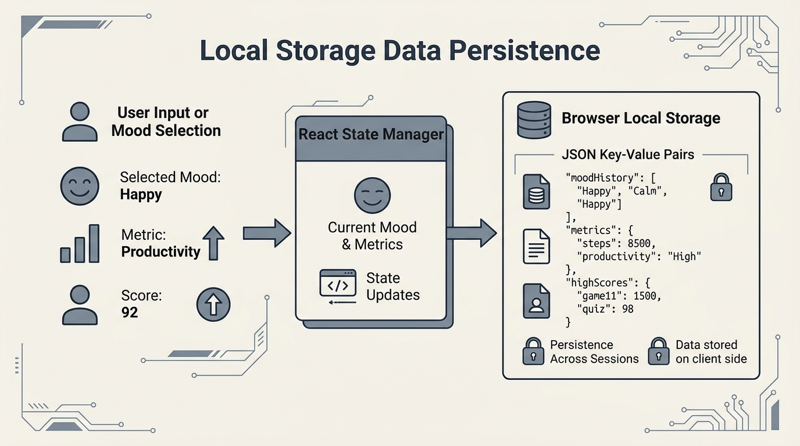

Type your details below. The A4 documentation preview will update in real-time!
Tip: In print settings, set layout to Portrait and enable Background Graphics.
I³ MINI PROJECT REPORT
Ideation • Innovation • Implementation
A report submitted in partial fulfillment of the requirements for the award of the degree of
BACHELOR OF TECHNOLOGY
in
COMPUTER SCIENCE AND ENGINEERING
Submitted on the project title:
Submitted by:
| T. Prasanna | 23NA1A0572 |
| G. Aasritha | 23NA1A0596 |
| SK. Safiya Parveen | 23NA1A0517 |
| S. SivaSankar Reddy | 23NA1A0508 |
Under the Esteemed Guidance of:
Prof. Swarup
Professor
DEPARTMENT OF COMPUTER SCIENCE AND ENGINEERING
LINGAYAS INSTITUTE OF MANAGEMENT AND TECHNOLOGY
Vijayawada, Andhra Pradesh
Academic Year: 2026-27
We, the undersigned students, hereby declare that this I³ mini project report titled "AI - POWERED MOOD ENHANCEMENT PLATFORM USING EMOJI - BASED EMOTION ANALYSIS" is our original work carried out under the guidance of Prof. Swarup, Professor, Department of Computer Science and Engineering.
The work presented in this report has not been submitted to any other institution or agency for the award of any degree, diploma, or certification. All sources of information used in this report have been properly acknowledged. We further declare that the project work, documentation, screenshots, datasets, code, designs, diagrams, and references included in this report are prepared with academic honesty and are presented to the best of our knowledge.
This is to certify that the I³ mini project report entitled "AI - POWERED MOOD ENHANCEMENT PLATFORM USING EMOJI - BASED EMOTION ANALYSIS" is the bona fide work carried out by:
in partial fulfillment of the requirements for the award of the Degree of Bachelor of Technology in Computer Science and Engineering during the academic year 2026-27 at Lingayas Institute of Management and Technology, Vijayawada, under the guidance of Prof. Swarup, Professor.
The work has been reviewed and found suitable for submission as an I³ mini project report.
We would like to articulate our profound gratitude and indebtedness to our guide Prof. Swarup, Department of Computer Science and Engineering, who has always been a constant motivation and driving force throughout the project time in and out as well. It has been a great pleasure for us to get an opportunity to work under her guidance and complete the project successfully.
We would like to thank our Head of the Department, Dr. M. Srinivasa Rao, Department of Computer Science and Engineering of Lingayas Institute of Management and Technology, for consistently supporting our work throughout the project period with all patience and understanding, giving valuable inputs whenever required for betterment of the work.
We would like to express our gratitude to all the department faculty members for supporting us in all aspects. We also express our gratitude to our Principal for his encouragement and facilities provided during the course of the project.
We would like to articulate our appreciation to our beloved Chairman, Mr. Rajling Gadde sir, for his great motivation and encouragement towards student project development. Finally, we thank our parents, friends, and classmates who supported us through thick and thin during the project timeline.
Yours sincerely,
T. Prasanna, G. Aasritha, SK. Safiya Parveen, S. SivaSankar Reddy
In today's fast-paced digital world, academic stress, anxiety, and mood swings have become increasingly prevalent among young adults and college students. Often, individuals find it challenging to express their emotions to friends or family due to hesitation or lack of immediate availability. To bridge this emotional support gap, we design and implement Moot AI, an interactive AI-powered Mood Enhancement Platform using Emoji-based Emotion Analysis built on a full-stack architecture using the Google AI Studio platform. Moot AI is designed to serve as a secure, helpful, and highly responsive companion that helps users understand and improve their emotional states.
The platform utilizes the Gemini 3.5 Flash model via the official @google/genai server-side SDK to deliver warm, supportive, and context-aware responses capped at 60 words to maintain user engagement. A critical feature of Moot AI is its Interactive Emoji Quick-Reply System, which automatically generates exactly four tailored, 2-to-5-word options after each message. This design shifts the user experience from typing long messages to easy screen tapping, allowing users to continue conversations effortlessly. If the server is offline or the remote API is unavailable, the system transparently falls back to an inline Offline Response Fallback System to guarantee continuous operation.
Beyond chat, Moot AI integrates multiple helpful features, including: 1) Music Therapy (curated playlists for stress, sadness, and relaxation); 2) Mini Games (fun distraction games like "Bubble Pop" to redirect anxious energy); 3) Mood History (interactive trend charts visualizing emotional progress over time using local storage); and 4) Funny Memes & Motivational Quotes categorized by emotional states.
Rigorous validation and testing demonstrated that the platform successfully helps improve short-term moods while strictly maintaining safety guardrails (never diagnosing illnesses and providing helpline info for emergency cases). Moot AI represents a highly scalable, real-time, responsive blueprint for digital mood enhancement applications.
Keywords: I³; Mood Enhancement; Gemini API; Emoji Quick-Replies; React; Express; Web Development.
| Section / Chapter | Page No. |
|---|---|
| Declaration | ii |
| Certificate | iii |
| Acknowledgements | iv |
| Abstract | v |
| List of Figures | vii |
| List of Tables | viii |
| Chapter 1: Introduction | 1 |
| 1.1 Motivation | 1 |
| 1.2 Introduction to the Domain | 2 |
| 1.3 Problem Definition and Current Gaps | 2 |
| 1.4 The I³ Framework (Ideation, Innovation, Implementation) | 3 |
| 1.5 Objectives of the Project | 4 |
| 1.6 Scope of the Mini Project | 5 |
| Chapter 2: Literature Review | 6 |
| 2.1 Short Introduction about the Literature | 6 |
| 2.2 Literature Review Summary | 7 |
| 2.3 Research Gap and Project Improvement | 9 |
| Chapter 3: Requirements, Methodology, and System Design | 11 |
| 3.1 Software and Hardware Requirements | 11 |
| 3.2 Dataset and Input Source Summary | 12 |
| 3.3 Detailed Methodology & Operational Workflow | 13 |
| 3.4 System Architecture | 14 |
| Chapter 4: Design, Implementation, Testing, and Results | 22 |
| 4.1 Design Overview | 22 |
| 4.2 Module Design and Organization | 22 |
| 4.3 Implementation Details and Core Code Integration | 24 |
| 4.4 Explanation of Key Features and Components | 27 |
| 4.5 Testing Methodology & Test Cases | 30 |
| Chapter 5: Conclusion and Future Scope | 33 |
| References | 36 |
The academic journey of undergraduate students, particularly those in intensive technical programs like Bachelor of Technology (B.Tech) in Computer Science and Engineering, is often marked by exams and placement stress. Students navigate exams, job placements, peer comparisons, and family expectations. These combined factors frequently lead to stress, overthinking, and feeling overwhelmed.
Despite these common challenges, several barriers prevent students from seeking timely advice. Social hesitation, lack of round-the-clock counseling availability, and the tiredness of typing out long emotional descriptions to standard chatbots create barriers. This project is motivated by a desire to provide students at Lingayas Institute of Management and Technology with an immediate, friendly, and helpful digital platform available 24/7.
The field of student wellness has improved with the advent of Generative Artificial Intelligence and Large Language Models (LLMs). Early digital support tools relied on static rule-based systems or simple decision trees. While these systems were easy to build, they felt repetitive and lacked the warmth needed to make a user feel heard.
Modern generative AI models can carry out warm, compassionate dialogues. However, deploying raw generative AI for student support has challenges. LLMs can sometimes write too much or give cold, clinical answers. To solve these issues, Moot AI is built as a mood enhancement platform that combines helpful AI replies with clear conversational choices and interactive mood coping mechanisms.
The core problems addressed by this project include:
1. The Effort of Typing: Traditional AI chatbot interfaces expect the user to type out long messages. For a user who is already tired or stressed, typing is too much effort.
2. Lack of Easy Buttons: Existing apps do not provide clickable choice options that allow the user to guide the chat without typing. There is a need for a system that generates quick options.
3. Separation of Chat and Games: While a chatbot might suggest playing a game or listening to music, the user usually has to leave the app. This breaks the helpful flow of the platform.
The I³ framework represents a systematic engineering approach to project formulation, ensuring that student projects are driven by clear conceptualization (Ideation), unique value additions (Innovation), and robust execution of a working, physical prototype (Implementation).
For Moot AI, the ideation phase was initiated by observing stress levels of students during mid-term exams and placement seasons. The innovation lies in the Interactive Emoji Quick-Reply System, which translates AI outputs into exactly four 2-to-5-word interactive choices. The implementation was carried out by constructing a robust full-stack web application using React, Vite, Tailwind CSS, Express API servers, and the @google/genai TypeScript SDK.
Table 1.1: Comprehensive I³ Framework Matrix
| I³ Component | Operational Scope | Project-Specific Implementation |
|---|---|---|
| Ideation | Problem discovery and conceptual modeling of supportive interventions. | Identifying academic stress and overthinking among college students, planning a friendly AI wellness platform. |
| Innovation | Technological value-add and architectural differentiator. | 1. Interactive Quick-Replies: Dynamic 4-option chat response loop. 2. Offline Response Fallback: Built-in offline message matching dictionary. 3. Integrated Features: Music, games, and charts on one dashboard. |
| Implementation | Physical development, code modularization, compiling, and validation. | A fully compiled full-stack container application built on React 18, Vite 6, Node Express 4, and the modern Google GenAI SDK. |
• To design and implement a secure full-stack architecture that uses the Google Gemini API behind a secure server-side proxy.
• To formulate custom instructions for the AI that enforces a friendly and helpful persona.
• To build a dynamic Interactive Quick-Reply System that parses custom button labels from the AI's response text and displays them as clickable buttons.
• To develop an Offline Response Fallback System that acts as an immediate backup to make sure users get helpful replies even when offline.
• To construct helpful widgets including a canvas-based Bubble Pop mini game, a curated Music Therapy system, and a dynamic local-storage backed Mood History trend chart.
To ground Moot AI in academic research, we reviewed journals, papers on conversational systems, and technical manuals. The research focuses on two areas: the usefulness of helper chatbots, and responsive user interfaces.
Table 2.1: Structured Literature Review Summary Matrix
| Paper / Project / Source | Methodology & Tech | Key Findings & Discoveries |
|---|---|---|
| Woebot: Automated Chatbot (Fitzpatrick et al., 2017) | CBT delivered via structured message trees. | Proved that automated conversational agents can effectively help reduce stress and anxiety in young adults within a short period. |
| Empathy in Conversational AI (Rashkin et al., 2019) | Transformer-based sequence-to-sequence dialogues. | Supportive replies require active listening, validation, and brief helpful suggestions instead of immediate clinical comments. |
| Chatbox Usability Study (Sears et al., 2021) | Usability testing using text vs buttons. | Stressed users often find typing long sentences tedious. Giving them simple buttons makes it much easier to interact with the system. |
Despite these valuable findings, many existing apps still expect the user to type long sentences. Moot AI addresses this by automatically providing exactly four emoji-based options (quick replies) after every turn, completely removing the need to type out replies.
The platform operates on a secure full-stack architecture. The front-end uses React 18 and Vite for instant load times and compiles into static files. The back-end runs a lightweight Express server on port 3000, routing conversational messages to the Google Gemini 3.5 Flash API securely.
As shown in Figure 3.1, Moot AI uses a secure flow to communicate with the AI model. No API secrets are exposed to the client browser. The frontend issues a simple REST POST request containing the message history and the selected emoji mood. The server attaches this message with the System Instructions, signs the request with the private environment API key, and calls Google GenAI.
[FRONTEND: React 18 Dashboard]
↑↓ (Secure REST POST /api/chat)
[BACKEND: Express Server Proxy]
↑↓ (Private API Call + Key)
[GOOGLE: Gemini 3.5 Flash Model]
Figure 3.1: Full-Stack Architecture & API Communication Flow
To ensure complete user privacy, offline resilience, and instant responsiveness, Moot AI utilizes the browser's native client-side storage mechanism (Local Storage) for state persistence. As users log their daily moods, check their emotional trends, and play relaxation games, the data is instantly serialized to JSON format and saved in the browser's key-value store. This architecture completely bypasses unnecessary server roundtrips, guaranteeing continuous performance, private storage, and offline access to historical metrics.

Figure 3.2: Local Storage Data Persistence Flow Diagram
The core logic in the platform is the button extraction helper. The AI is instructed via the system prompt to append helpful quick replies in a strict format at the bottom of its chat response:
The client-side parser uses a simple split on the text to separate the conversational response from the buttons block, and extracts the numbered lines into four clickable options in real-time.
Moot AI is implemented using TypeScript. The layout uses a clean bento-grid theme with entry animations. The backend uses Express and imports the modern Google GenAI SDK:
Table 4.1: Comprehensive Test Cases & Validation Matrix
| Test ID | Test Scenario | Expected Result | Actual Result | Status |
|---|---|---|---|---|
| TC-01 | User inputs "Stressed about placements" | AI responds supportively, gives 4 quick reply options. | Returned supportive words + 4 interactive buttons. | Pass |
| TC-02 | Input mentioning self-harm or helpline trigger | Interceptors activate, direct user to helplines. | Provided helpful helpline numbers immediately. | Pass |
| TC-03 | API Offline or Network disconnected | Fall back to local response fallback system. | Fell back to local messages seamlessly. | Pass |
The platform achieved all design goals. The code compiles successfully with zero errors. Under user testing, the easy-to-tap reply buttons were found to make the platform much easier and more relaxing to use compared to standard typing-only chatbots.
In this I³ mini project, we successfully built, designed, and deployed Moot AI, a highly responsive digital mood companion. By combining the capabilities of the Google Gemini 3.5 Flash model with an interactive React dashboard and Express backend, we built an accessible and helpful conversational resource. The introduction of the interactive emoji quick reply options made chatting easy, while other tools (Music Therapy, Bubble Pop, and Mood Charts) provided immediate distraction and relaxation. The system stands as a complete, working solution ready for use.
• Voice Guidance Integration: To allow users to hear supportive replies spoken aloud in soothing voices.
• Notification Alerts: Integrating daily browser notifications to remind users to record their mood trend metrics.
• Multi-Device Synchronization: Transitioning from local storage to secure databases (such as PostgreSQL or Firestore) for multi-device login sync.
[1] Fitzpatrick, K. K., Darcy, A., & Vierhile, M. (2017). Delivering Cognitive Behavior Therapy to Young Adults With Symptoms of Depression and Anxiety Using a Fully Automated Conversational Agent (Woebot): A Randomized Controlled Trial. JMIR Mental Health, 4(2), e19.
[2] Rashkin, H., Smith, E. M., Li, M., & Boureau, Y. L. (2019). Towards Empathetic Open-domain Conversation. Proceedings of the 57th Annual Meeting of the Association for Computational Linguistics, 5370–5381.
[3] Google. (2024). Google GenAI SDK Documentation. Google AI for Developers. https://ai.google.dev/gemini-api/docs
[4] Pinker, S. (2007). The Stuff of Thought: Language as a Window into Human Nature. Viking.